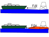

Homework#
Complete problems: 4.2, 4.6, 9.14
The bar shown above is initially at \(\theta = 0~rad\) when it begins to slide away from the wall. Use conservation of energy and the constraints on the motion of bar to find the angular velocity of the ladder when \(\theta=\frac{\pi}{6}~rad\). The bar is \(m=0.5~kg\) and \(L=1~m\)-long.

On Mar 27, 2024 a 985-foot long, 96.5e6 kg cargo ship lost control and hit the Francis Scott Key Bridge in Baltimore, MD. The ship was not travelling more than 8 mph, but it destroyed the bridge. This was a terrible accident that cost a people’s lives and the collapse of the bridge.
As engineers, its our job to understand the magnitude and options to avoid or mitigate disasters like this. Consider two options for designing a stopping device,
1. a tug boat applies a constant thrust, \(F\), for \(\Delta t = 60~s.\) How much force does the tug boat need to apply? Will a steel cable or chain be able to withstand the force?
2. A rubber fender with stiffness of \(k=3E6~N/m\) is used to stop the cargo ship. How thick does the rubber fender need to be to bring the cargo ship to a stop? _the energy stored is \(V=\frac{1}{2}k\Delta x^2\).